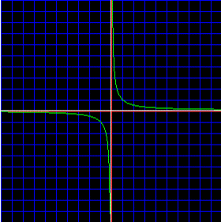
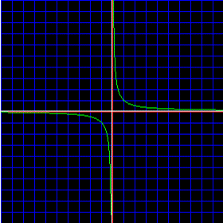
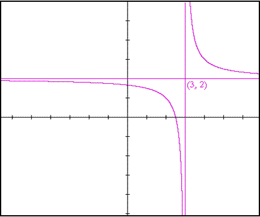
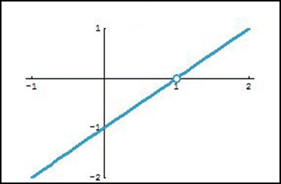
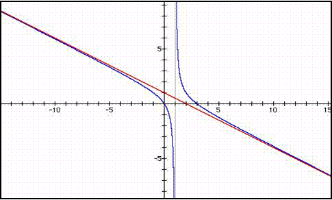
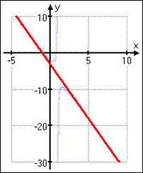
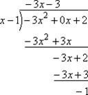

Rational Functions & Asymptotes
Homework
Rational Function - the quotient of 2 polynomials
$f(x)={g(x)}/{h(x)}\text", where " h(x)≠0$ (2 functions that can be written as a fraction)
Asymptote - line in which a rational funciton is undefined

$f(x)={g(x)}/{h(x)}\text", where " h(x)≠0$ (2 functions that can be written as a fraction)
Asymptote - line in which a rational funciton is undefined

Vertical Asymptote - is the line $x=0$ b/c...
as x approaches(→)±0, $f(x)$ approaches(→)±∞
Horizontal Asymptote - is the line $f(x)=0$ b/c...
as x approaches(→)±∞, $f(x)$ approaches(→)±0
as x approaches(→)±0, $f(x)$ approaches(→)±∞
Horizontal Asymptote - is the line $f(x)=0$ b/c...
as x approaches(→)±∞, $f(x)$ approaches(→)±0

| $\lim↙{x→3}=±∞$ | $\lim↙{x→±∞}=2$ |
| Vertical Asymptote is the line $x=3$ b/c... | Horizontal Aysmptote is the line $f(x)=2$ b/c... |
| as x approaches(→) 3 | as x approaches(→) ±∞ |
| $f(x)$ approaches(→) ±∞ | $f(x)$ approaches(→) 2 |
Here is a translation of our parent rational graph...
$\table f(x)=1/{x-3}+2; \lim↙{x→±∞}1/{x-3}+2; \lim↙{x→±∞}{1/x}/{1-{3/x}}+2; =0/1+2=2$
Hole - appears in a graph when the numerator & denominator share a common factor
$\table f(x)=1/{x-3}+2; \lim↙{x→±∞}1/{x-3}+2; \lim↙{x→±∞}{1/x}/{1-{3/x}}+2; =0/1+2=2$
Hole - appears in a graph when the numerator & denominator share a common factor
| $\table y={(x-1)^2}/{(x-1)}; y={(x-1)(x-1)}/{(x-1)}; {\table y=x-1, \text"where "x≠0}$ |
|  |
Slant Asymptote - exists when the degree of the numerator is exactly 1 greater than that of the denominator... neither vertical nor horizontal
|  | slant asympotote is the oblique line $f(x)=c$ if... |
| as x approaches ±∞ | |
| $f(x)$ approaches $±c$ | |
| $\lim↙{x→±∞}f(x)±c$ |
| Original Function | Graph of the Original Function |
|---|---|
| $y={-3x^2+2}/{x-1}$ |  |
| Long Division | |
|  | |
| Slant Asymptote | |
| $y=-3x-3-1{-1}/{x-1}$ |
Summary of Asymptotes
| Vertical | Horizontal | Slant |
|---|---|---|
| $x$ values that make $f(x)$ undefined (=∞) | $\lim↙{x→±∞}f(x)$ | quotient from long division only when... ${x^{n+1}}/{x^n}$ |